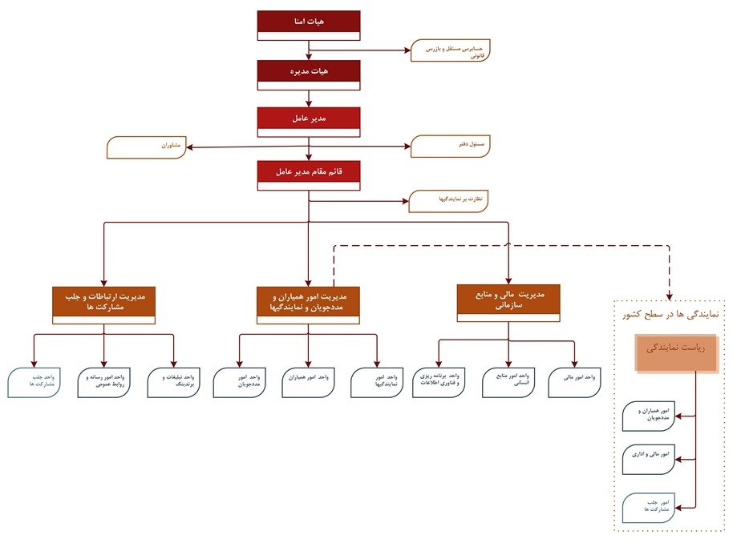

آشنایی با موسسه بنیاد کودک
تاریخچه
بنیادکودک از سال 1373 در ایران و آمریکا فعالیت خود را آغاز کردهاست. این مؤسسه در ایران با نام "مؤسسه خیریه رفاه کودک" و در آمریکا با نام "Child Foundation" به ثبت رسیدهاست. درسال 1378 بنیادکودک در ایران ثبت رسمی شد و از ثبت شرکتها در شیراز مجوزی به شماره 398 دریافت کرد. سپس دفترمرکزی بنیادکودک از شیراز به تهران منتقل شد و پس از انتقال رسمی اسناد، مجدداً از ثبت شرکتها در سال 1388 مجوزی به شماره 25540 دریافتکرد.
این مؤسسه، یک مؤسسه خیریه مردمنهاد، غیردولتی، غیرسیاسی، غیرانتفاعی، فرامذهبی و فرامرزی است که رویکردی کاملاً انساندوستانه دارد. هدف این مؤسسه دستیابی به این آرمان است که "هیچ دانشآموز با استعدادی به دلیل مشکلات اقتصادی از تحصیل و تلاش باز نماند."
این مؤسسه با دریافت مجوزملی از وزارت کشور توانست دامنهی فعالیت خود را به بسیاری از استانها بگستراند و اینک 28 نمایندگی در آمل، اردبیل، اهواز، ارومیه، ایلام، اصفهان، بروجرد، بم، بوشهر، بیرجند، تبریز، تهران، جیرفت، داراب، رشت، زاهدان، زابل، سنندج، شیراز، شهرکرد، کاشان، کرمانشاه، کرج، مراغه، مشهد، مهاباد، یاسوج و یزد دارد. ضمن اینکه در برخی از استانها به فراخور شرایط اقتصادی و جغرافیایی نمایندگیهای اقماری نیز فعال شده که از آن جمله میتوان به خاش، ایرانشهر، فنوج، نیکشهر، سراوان در سیستان و بلوچستان، کفران در اصفهان، مرودشت و جهرم در فارس، شهربابک، ریگان و رستمآباد در بم، اشاره کرد.
بنیادکودک با ایجاد شعب برونمرزی خود توانست رابطهای عاطفی بین ایرانیان مقیم خارج از کشور را با هموطنانشان در ایران سببشود. شعب بینالمللی بنیاد در کشورهای آمریکا، سوئیس، آلمان، انگلیس، سوئد و کانادا مشغول به فعالیت هستند.
بنیادکودک از آغازِ فعالیت تاکنون توانستهاست بیش از دوازدههزار دانشآموز و به تبع آن خانوادههای آنها را تحت حمایت قراردهد و امروز نیز بیش از 9000 دانشآموز را در سراسر ایران حمایت میکند که حدود هزارنفر از این دانشآموزان توانستهاند به دانشگاههای کشور وارد شوند.
از آنجا که بنیادکودک از ابتدای فعالیت خود معتقد به عملکردی فراگیر، پیشرو، مدرن، پاسخگو و شفاف بودهاست، همواره در جهت توسعه فناوری اطلاعات بسیار کوشیدهاست. پس با اعتقاد به این رویکرد متناسب با نیاز، اهداف، چشمانداز و... نسبت به طراحی یک نرمافزار جامع تحت وب به نام وندا اقدامکرد و در سال 87 بهطور رسمی از این نرمافزار بهرهبرداری شد و از آن پس تمامی اطلاعات دانشآموزان، همیاران، همکاران، مالی و... بر روی این نرمافزار قرارگرفت و این نرمافزار توانست جامعه جهانی بنیادکودک را به یک دهکدهی اطلاعاتی و ارتباطی تبدیلکند.
بنیادکودک برای بیان فعالیت شفاف خود از سال 81 از حسابرسان رسمی دعوت بهعمل آورد تا گردش مالی مؤسسه موردحسابرسی قرارگیرد.
بنیادکودک در سال 2005 توانست از کمیسیون اقتصادی- اجتماعی سازمان ملل (Ecosoc) مقام مشورتی دریافتکند و تاکنون نیز هر پنج سال یکبار با ارائهی عملکرد شفاف و انساندوستانهی خود موفق شدهاست این گواهینامه را تمدید کند.
همچنین این مؤسسه در سال 86 موفق به کسب مجوز معافیت مالیاتی از هیأت دولت شد که مبتنی بر این مجوز همیاران میتوانند کمکهای خود را در قالب هزینههای قابل قبول مالیاتی به سازمان امور مالیاتی ارائهکنند.
چارت سازمانی
اهداف و دیدگاهها
خط مشی موسسه خیریه رفاه کودک، بر اهمیت به تحصیل و آموزش استوار بوده است. این موسسه تلاش میکند تا با حفظ شان انسانی دانش آموزان، از «نیازمند پروری»، پرهیز کند و آنها را در ساختن آیندهای با چشم اندازهای روشن یاری کند. بنیاد کودک ایران، یک سازمان غیر انتفاعی و غیردولتی است و این ویژگی بخش جدایی ناپذیر خط مشی موسسه خیریه رفاه کودک بوده و خواهد بود و در هیچ شرایطی از هرگونه اقدامی که با این ویژگی مطابقت نداشته باشد، استقبال نخواهد کرد. البته همیاران بنیاد کودک ایران، میتوانند از هر قشر، هر ملیت و با هر مرام سیاسی و مذهبی باشند. اما موسسه هیچگونه اقدام و یا جهت گیری، علیه گروه خاصی را، نخواهد پذیرفت. هر گونه همیاری مادی یا معنوی نیز با احترام به نیت خیر فرد یا سازمان ارائه دهنده، که با هدفی غیر از کمک به دانش آموزان نیازمند باشد، پذیرفته نخواهد شد.
چگونگی حمایت افراد
روش حمایت از افراد در بنیاد کودک ایران به این ترتیب است که کودکان و دانش آموزان مستعد تحصیل از طریق دفاتر بنیاد کودک ایران، سازمانهایی مانند بهزیستی، آموزش و پرورش توسط مددکاران شناسایی شده، پس از آن بررسیهای لازم در زمینه دارا بودن شرایط و استانداردهای موسسه و جمع آوری مدارک و مستندات، بنام آنها در سیستم بنیاد کودک ایران پروندهای تشکیل میگردد. پرونده مددجویان بر روی وب سایت بنیاد کودک ایران قرار گرفته و یا برای دفاتر خارج از کشور بنیاد کودک ایران ارسال میشود تا به میزان نیازی که مددکار با توجه به شرایط زندگی و مقطع تحصیلی آنان برآورد نموده است، برایشان اسپانسر جذب شود. پس از آن به میزان این کمک، مبلغی به عنوان «کمک هزینه تحصیلی»، ماهیانه به حساب قیم قانونی مددجو و یا خود وی واریز میشود. در حال حاضر بیش از شش هزار دانش آموز و دانشجو از این طریق تحت حمایت بنیاد قرار گرفتهاند که در مقاطع مختلف مشغول به تحصیل بوده و بسیاری از آنان نیز از دانشگاهها و موسسات آموزش عالی کشور، فارغ التحصیل شدهاند. علاوه بر این بنیاد کودک ایران، بر حسب توان و امکانات خود، در پروژههای انسان دوستانه نیز مشارکت داشته و خواهد داشت. احداث مرکز اقامتی برای کودکان سرطانی در ارومیه و اداره آن، نمونهای از این فعالیت هاست.
عمده روشهای همیاری
همیاران مهربان میتوانند دانش آموز یا دانش آموزانی را با توجه به شرایط سنی و تحصیلی مورد نظر خود انتخاب کنند.
- پذیرش حمایت از یک دانشآموز هیچگونه تعهد و الزام قانونی در روند و ادامه حمایت از وی، ایجاد نخواهد کرد. با توجه به اینکه بنیادکودک مبالغ تعهدِ همیاران را بهصورت ماهانه و مستمر به دانشآموزانِ تحت حمایت میپردازد (حتی در صورت عدم پرداخت همیار) با توجه به کمبودِ منابع مالی عمومی این موسسه، خواهشمند است در صورت عدم تمایل به ادامه همکاری، مراتب را حتماً و سریعاً به اطلاع موسسه رسانیده تا فرصت جایگزینی همیارِ دیگری برای دانشآموز از سوی موسسه وجود داشته باشد.
- بنیادکودک متعهد میشود در برابر کمکهای دریافتی از همیارانِ خود، پاسخگو بوده و اسناد و صورتحسابهای لازم را (ترجیحاً الکترونیکی) ارائه کند.
- از مبلغ پرداختی همیاران دهدرصد بابت هزینههای مددکاری کسر و مابقی به دانشآموز با استعداد نیازمندِ تحت حمایت، پرداخت میشود.
- بنیادکودک متعهد میشود سالانه دوبار گزارشی از آخرین وضعیت تحصیلی زندگی دانشآموزان تحت حمایت تهیه کرده و جزئیات آن را به اطلاع همیاران خود برساند. این گزارشها بر مبنای تمایل همیاران عزیز به نشانی پستی و یا ایمیل آنان ارسال خواهد شد.
- مبالغ درج شده به عنوان نیاز دانشآموزان در گزارشهای دورهای، هیچ تعهدی برای همیار در خصوص پرداخت ایجاد نمیکند و صرفاً جنبه اطلاعرسانی دارد و برآورده کردن یا نکردن آن بر حسب تمایل همیار است.
بنیادکودک ایران برای تخصیص بهینه کمکهای همیاران مهرمند، اقدامات زیر را در نظر دارد:
- بنیادکودک در صورت عدم تأمین نیاز ماهانه دانشآموز توسط یک همیار، تلاش خواهد کرد تا حمایت افراد نیکوکارِ دیگر را به عنوان همیار بعدی جلب کند.
- مطابق نظر مددکار، بخشی از مقرری ماهانه دانشآموز به عنوان پسانداز در حسابهای بانکی تحتِ نظارت بنیادکودک ذخیره خواهد شد تا در مواقع اضطراری و یا مناسبتهایی مانند عید نوروز و شروع سال تحصیلی و ... در اختیار دانشآموز قرار گیرد.
- در صورت افت تحصیلی و یا عدم همکاری دانشآموز و یا خانواده وی، بنیادکودک به مدت یک ماه و حداکثر 6 ماه، نسبت به کاهش یا قطع کمکها اقدام خواهد کرد. در صورت برطرف شدن مشکل، مبالغ جمعآوری شده در ماههای گذشته به وی پرداخت خواهد شد و در غیر این صورت به همیارِ وی اطلاع رسانی میشود. همچنین در صورتیکه دانشآموز از پوشش خارج شود، ضمن هماهنگی با همیار محترم، مبالغ پرداختی به دانشآموزِ جایگزین تعلق خواهد گرفت.
- بنیادکودک خود را امانتدارِ همیاران مهرمند و نیز دانشآموزان و خانوادههای آنان میداند، لذا خود را موظف میداند تا اطلاعات شخصی و نیز آدرس و شماره تماس هر دو گروه را نزد خود و بهصورت محرمانه نگاه دارد. در صورت تمایلِ همیاران به برقراری تماس تلفنی یا دیدار حضوری با دانشآموزان با نظارت بنیادکودک و مددکار در دفاتر موسسه دیدار انجام خواهد شد. همیاران میتوانند درخواست دیدار با دانشآموزِ تحت حمایت خود و یا برقراری تماس تلفنی با او را در هر زمان به بنیادکودک اعلام فرمایند تا هماهنگیهای لازم در این زمینه صورت پذیرد.
- چنانچه امکان ملاقات حضوری یا تماس تلفنی برای همیاران وجود نداشته نباشد، میتوانند کتباً فردی را به عنوان نماینده به موسسه معرفی کرده تا از طرف ایشان با دانشآموز تماس داشته باشند.
- بنیادکودک هدایای غیرنقدی ارائه شده از سوی همیاران را دریافت و آن را به دانشآموزان تحویل خواهدداد که رسیدِ آن نیز در اختیار همیاران عزیز قرار داده میشود.
- بنیادکودک به جهت حفظ کرامت انسانی دانشآموزانِ تحت حمایت از پذیرفتن هرگونه کالای دست دوم معذور است و تنها هدایای نو را در اختیار دانشآموزان و خانوادههای آنان قرار میدهد.
- همیار میتواند بدون در نظر گرفتن شهرِ محل سکونت دانشآموزِ تحت حمایت و دفتر بنیادکودک در آن شهر، هریک از دفاتر بنیادکودک درایران و یا خارج از کشور را برای پرداخت کمک های خود انتخاب کند و بنیادکودک نیز موظف است شرایط اجرایی لازم را در این خصوص فراهم آورد.
فعالیتها
گالری تصاویر
صورتهای مالی
صورتهای مالی بنیادکودک هر ساله در پایان سال مالی منتهی به 10خرداد (may 31) توسط یكی از اعضای جامعهی حسابداران رسمی، در راستای توسعه ی شفافیت بیشتر موسسه، حسابرسی میشود.